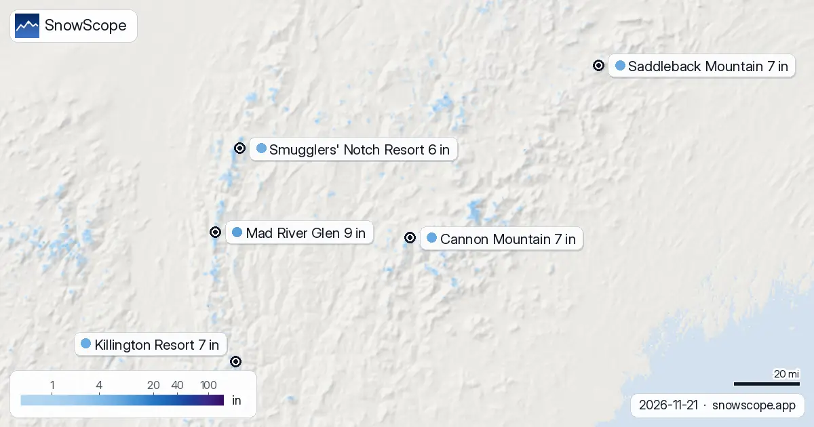

Ski gear for Mad River Glen today: ready for thin early-season snow (US Northeast, 21 November)
Today's snow in the US Northeast, read from our model and forecast, means thin early-season snow, icy mornings and soft afternoons and warm air that can leave a crust. Here is what to pack and wear at each resort, and when to ski. Snow in the mountains is water held back for spring: what falls now feeds rivers and reservoirs later.
See the live snow forecast for Mad River Glen in the SnowScope appSnow depth, powder alerts and the 3D map, free.
Today's snow and weather
Thin early-season snow (upper slopes under 12 in (30 cm)): Mad River Glen (9 in (22 cm)), Saddleback Mountain (7 in (19 cm)) and Cannon Mountain (7 in (18 cm)).
Icy mornings and soft afternoons (0 °C level above mid-mountain by day, below the base at night): Mad River Glen, Saddleback Mountain and Cannon Mountain.
Warm air that can leave a crust (snow line above the top on a warm day without much new snow): Mad River Glen, Saddleback Mountain and Cannon Mountain.
| Resort | Snow depth | New snow, 72 h | Coming, next days | Top |
|---|---|---|---|---|
| Mad River Glen | 9 in (22 cm) | 0 in (0 cm) | 0 in (0 cm) | 3,629 ft (1,106 m) |
| Saddleback Mountain | 7 in (19 cm) | 0 in (0 cm) | 0 in (0 cm) | 3,996 ft (1,218 m) |
| Cannon Mountain | 7 in (18 cm) | 0 in (0 cm) | 0 in (0 cm) | 4,039 ft (1,231 m) |
| Killington Resort | 7 in (17 cm) | 0 in (0 cm) | 0 in (0 cm) | 4,140 ft (1,262 m) |
| Smugglers' Notch Resort | 6 in (14 cm) | 0 in (0 cm) | 0 in (0 cm) | 3,648 ft (1,112 m) |

Rain up to the top?
On Saturday 21 November the freezing level climbs to about 12,762 ft (3,890 m), above the top of the lifts at 3,629 ft (1,106 m): rain can fall even at the top.
Rain on fresh snow makes it heavy and, after a cold night, icy: the days after are better for groomed runs than for powder.
At about 2,638 ft (804 m), Mad River Glen has 0 in (1 cm) today; a normal 21 November has 2 in (4 cm) there.
Only one winter in ten has more than 6 in (16 cm) on this date.
A week ago the same spot had 0 in (1 cm).
In past winters the best snow at Mad River Glen usually came mid-February / late February.
The snowpack at each resort
Mad River Glen (top 3,629 ft (1,106 m)) holds about 9 in (22 cm) on its upper slopes, gained 0 in (0 cm) in 72 hours and should get 0 in (0 cm) in the next days, and the 0 °C level moves between 1,115 ft (340 m) and 12,762 ft (3,890 m).
Saddleback Mountain (top 3,996 ft (1,218 m)): about 7 in (19 cm) stored up high, 0 in (0 cm) added in 72 hours, 0 in (0 cm) forecast for the next days, and the 0 °C level moves between 0 ft (0 m) and 12,664 ft (3,860 m).
Cannon Mountain (top 4,039 ft (1,231 m)) holds about 7 in (18 cm) on its upper slopes, gained 0 in (0 cm) in 72 hours and should get 0 in (0 cm) in the next days, and the 0 °C level moves between 0 ft (0 m) and 12,861 ft (3,920 m).
Killington Resort (top 4,140 ft (1,262 m)): about 7 in (17 cm) stored up high, 0 in (0 cm) added in 72 hours, 0 in (0 cm) forecast for the next days, and the 0 °C level moves between 2,067 ft (630 m) and 12,762 ft (3,890 m).
Smugglers' Notch Resort (top 3,648 ft (1,112 m)) holds about 6 in (14 cm) on its upper slopes, gained 0 in (0 cm) in 72 hours and should get 0 in (0 cm) in the next days, and the 0 °C level moves between 1,050 ft (320 m) and 12,631 ft (3,850 m).
Clothes and gear for this snow
With so little snow on the ground, stones sit just below the surface: older or rented skis, sharp edges and groomed runs are the right choice.
Melt by day, refreeze by night means ice in the morning: freshly sharpened edges, a helmet, lighter layers, sunglasses and sun cream.
Rain soaks the snow and then it refreezes into a hard crust: a waterproof shell, sharp edges, a helmet and groomed runs.
Timing and slopes
Snow survives best on high runs that face north.
The sun softens east-facing slopes first: start there, and stop before the snow turns heavy and wet late in the day.
The highest slopes stay coldest and keep the snow driest.
Off-piste safety kit
Off the groomed runs, carry an avalanche transceiver, a shovel and a probe, know how to use them, and never go alone. Read the official avalanche bulletin first.
Tips for skiers
- Local service beats a guess: shops tune edges for the snow of the day.
- Snow on the map does not mean a resort is open: check lifts and dates on the resort's website.
- Before any off-piste or touring day, read the official avalanche bulletin (links below).
- The 0 °C level is a forecast with an error of several hundred metres: check the map again the day before you go.
About these numbers
Resort snow depths are the deepest snow on the resort's upper slopes from the SnowScope snow model (about 1 km, run of 21 November); they are estimates for an area, not a measurement at one point. Station values are measurements on the date shown. Forecasts can change. Always read the official avalanche bulletin before going off-piste.
Official avalanche bulletins: Mount Washington Avalanche Center
Cite this report
For research, teaching or the press: the numbers and charts are free to reuse under CC BY 4.0 with this citation.
SnowScope (2026), Ski gear for Mad River Glen today: ready for thin early-season snow (US Northeast, 21 November), https://snowscope.app/blog/en/2026/11/us-northeast-what-to-bring-ski-gear-conditions-21-november-2026.html, accessed 2026-11-21
SnowScope (Atlas Labs). (2026, November 21). Ski gear for Mad River Glen today: ready for thin early-season snow (US Northeast, 21 November). SnowScope snow reports. https://snowscope.app/blog/en/2026/11/us-northeast-what-to-bring-ski-gear-conditions-21-november-2026.html
BibTeX
@misc{snowscope2026usnortheastwhattobringsk,
author = {{SnowScope (Atlas Labs)}},
title = {Ski gear for Mad River Glen today: ready for thin early-season snow (US Northeast, 21 November)},
year = {2026},
month = nov,
howpublished = {\url{https://snowscope.app/blog/en/2026/11/us-northeast-what-to-bring-ski-gear-conditions-21-november-2026.html}},
note = {Published 2026-11-22 10:03 UTC; accessed 2026-11-21}
}· CC BY 4.0 · Methods, data and tools →
Mad River Glen: snow and temperature by height, this winter vs last (tools) →
Follow Mad River Glen
Free: a message when fresh snow is coming, and the forecast every morning.
More snow reports

Stratton has 5 in (12 cm) on 2026-11-13 after 72 hours of snow. 28 Northeast resorts now have cover. Small amounts continue; best powder weeks arrive much later.

Okemo Mountain will get 15 in (38 cm) of new snow by November 14, with 11 in (29 cm) on November 13, our snow model from November 11 shows.

Northeast forecast made 10 November: 10 in (25 cm) of new snow arriving through 13 November will transform snow cover from 1 resort to 62.